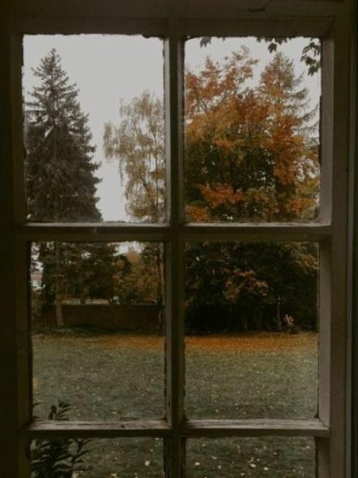
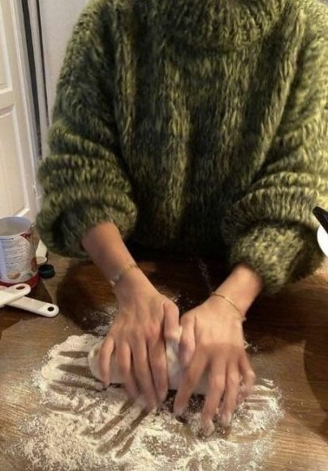
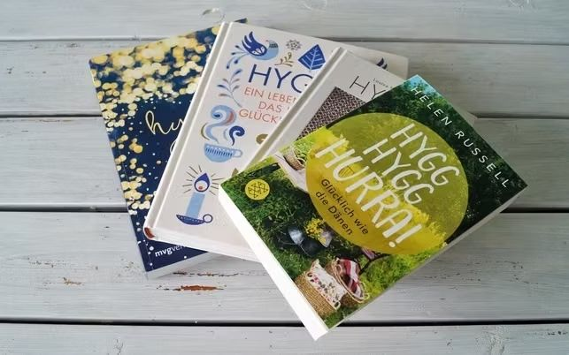

Hygge – so wird dein Herbst gemütlicher

Wenn die Tage kürzer werden und es draußen schon am Nachmittag dunkel wird, fühlen sich viele Menschen müde und schlecht gelaunt. Am liebsten würden sie bis zum Frühling unter der Bettdecke bleiben. In Dänemark ist das anders: Obwohl die Winter dort noch länger und dunkler sind als in Deutschland, gehören die Dänen regelmäßig zu den glücklichsten Menschen der Welt. Im „World Happiness Report“ landet Dänemark jedes Jahr weit oben, oft zusammen mit Finnland, Norwegen und Schweden. Ihr Geheimnis hat einen Namen: Hygge (gesprochen: „hügge“).
Was bedeutet Hygge?
Eine genaue Übersetzung gibt es nicht. Am nächsten kommt das deutsche Wort „Gemütlichkeit“, aber Hygge ist mehr als ein bequemes Sofa. Hyggelig ist alles, wobei man sich wohl und geborgen fühlt: ein Abend mit Freunden, warmes Kerzenlicht, gutes Essen und lange Gespräche, bei denen niemand auf die Uhr schaut. Für die Dänen ist Hygge die beste Antwort auf die kalte und dunkle Jahreszeit.
Hygge gibt es allerdings nicht nur im Winter. Im Sommer kann ein Picknick am See, eine Fahrradtour oder ein Abend am Lagerfeuer genauso hyggelig sein. Das Wichtigste ist: Du brauchst eigentlich nur dich selbst und ein bisschen Zeit.
So machst du es dir hyggelig
- Licht: Kein anderes Element ist für Hygge so wichtig wie das Licht. Statt einer hellen Deckenlampe sorgen mehrere kleine Lichtquellen für eine wärmere Atmosphäre. Am schönsten sind natürlich Kerzen oder ein Kaminfeuer.
- Dein Zuhause: Deine Wohnung sollte ein Rückzugsort sein, an dem du dich vom Alltag erholen kannst. Mit Decken, Kissen, einem weichen Teppich und ein paar Pflanzen wird sie sofort gemütlicher.
- Achtsamkeit: Konzentriere dich auf den Moment und sei dankbar für die schönen Dinge in deinem Leben, allein oder mit Menschen, die dir wichtig sind.
- Gemeinsam essen: Lade Freunde zum Kochen ein oder backe mit deinen Kindern Zimtschnecken. Wenn es danach in der ganzen Wohnung nach Zimt riecht, ist Hygge garantiert.
- Entspannen: Tu dir selbst etwas Gutes: Kuschel dich in eine Decke, trink einen Tee und schau einfach aus dem Fenster. Wichtig: Über Politik und andere ernste Themen spricht man in hyggeligen Stunden nicht.

Unsere Buchtipps

- „Hygge – Ein Lebensgefühl, das einfach glücklich macht“ von Meik Wiking. Der Autor leitet in Kopenhagen ein Institut für Glücksforschung und erklärt, warum Hygge glücklich macht. Für viele ist es das bekannteste Buch zum Thema.
- „Hygge – Die dänische Art, glücklich zu leben“ von Louisa Thomsen Brits. Die Autorin ist halb Dänin. Sie beschreibt, wie die Dänen seit Jahrhunderten das Glück in ihren Alltag einbauen.
- „Hygge – Das große Glück liegt in den kleinen Dingen“ von Marie Tourell Søderberg. Die Autorin hat Rezepte, Playlists und Einrichtungsideen von Dänen gesammelt.
- „Mach’s dir hygge“ von Nicole Zweig. Hier findest du Bastelanleitungen und Rezepte, mit denen du sofort loslegen kannst.
- „Hygg Hygg Hurra! Glücklich wie die Dänen“ von Helen Russell. Die Journalistin erzählt, wie sie mit ihrem Mann von London aufs dänische Land gezogen ist und ein Jahr lang versucht hat, wie die Dänen zu leben.
Hygge überall
Inzwischen ist Hygge ein weltweiter Trend. Eine amerikanische Zeitschrift erklärte 2016 sogar zum „Jahr des Hygge“. Heute gibt es Cafés, Shops, Möbel und sogar Kerzen mit dem Wort „Hygge“ im Namen.
Dabei geht es bei Hygge nicht um teure Dinge, sondern darum, das kleine Glück im Alltag zu schätzen und das Beste aus dem zu machen, was man hat. Verwechsle Hygge also nicht mit Shopping!